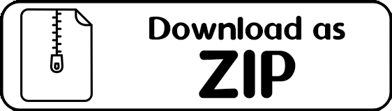

After finishing my IB exams, I wanted to work on somthing big and complicated over the summer break. No, I didn't want to touch my old projects (eww, gross) I wanted something new and shiny! Having access to a PS2 with Shadow of the Colossus, it really got me thinking about how the game has a largely empty open landscape, but its barrenness is what makes it interesting. Seeing a rare remnant of a lost civilization, wildlife, or bizarre landscapes is what gave the world personality and drove you to explore the map a little further. I wanted to invoke a similar feeling, so I started exploring how to handle large landscapes in a video game.
The research led me to the concept of using heightmaps, so I wrote a small implementation in GameMaker: Studio along with 3D collision for the map geometry. By this point I also had a better grasp of the math and logic involved in 3D collisions, so I implemented some of that as well. I made a character model in Blender and then made a sprite sheet from that, planning on having all of the characters in the game be billboards like in Doom. I was directionless for most of the project, throwing in some small ideas to see what stuck, but I ultimately didn't pursue too much of the project as I begun my Computer Science degree.
